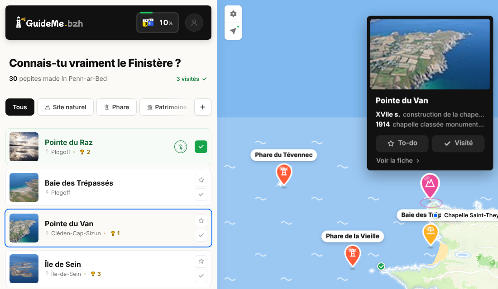
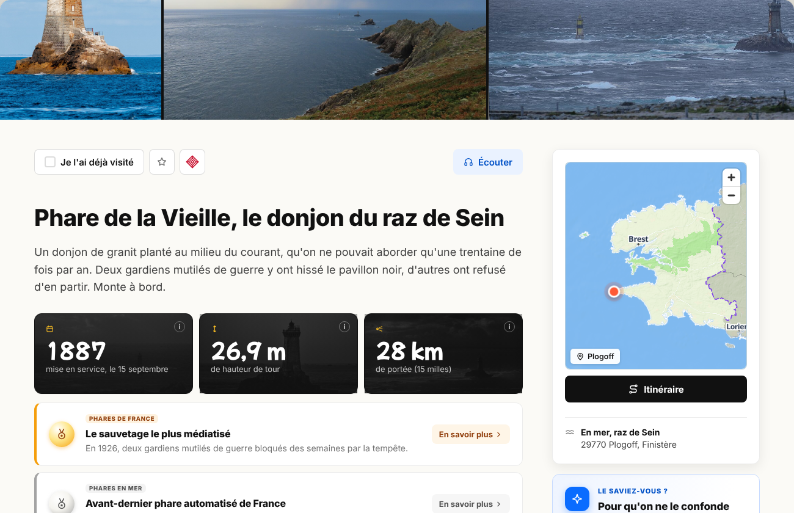
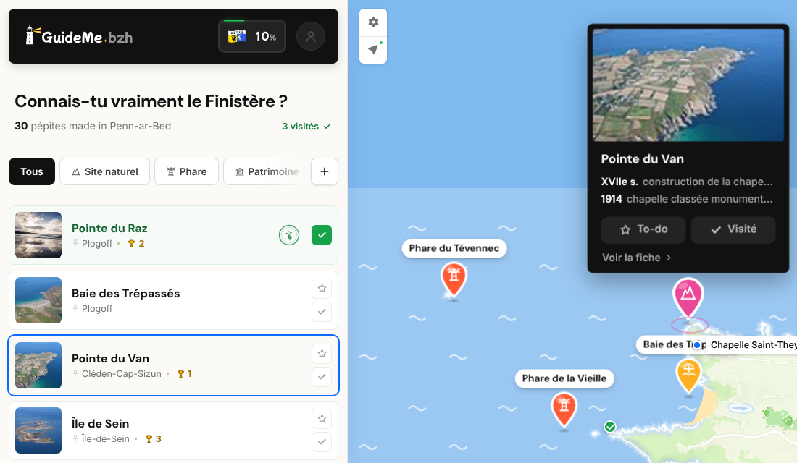
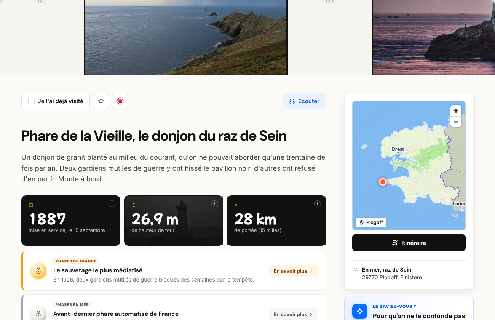
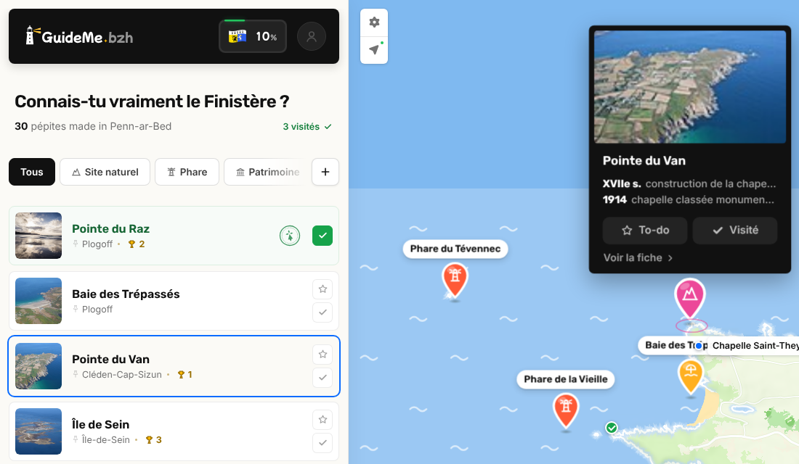

Référence : neutre et très lisible, mais un peu froide.


Très proche d'Inter en structure, mais avec des courbes plus douces et un « a », un « t » plus chaleureux. Le pas le plus sûr vers du friendly.
Géométrique et ronde, ouverte et légère. Plus moderne, très « produit », un peu plus de rondeur que Figtree.


Angles légèrement arrondis, la plus « jeu » des trois. La plus proche de l'esprit du logo, tout en restant sobre pour le contenu.
